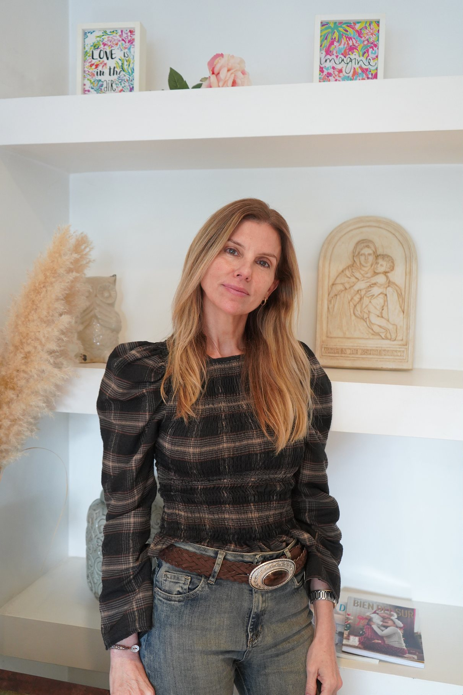
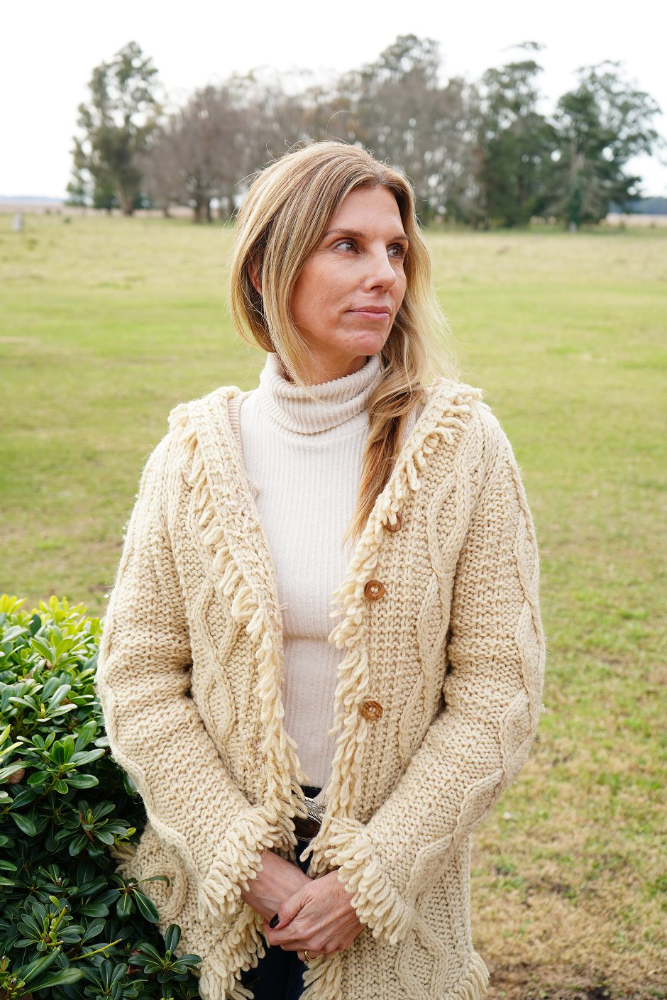

Procesos de transformación, consciencia y crecimiento para mujeres que eligen conocerse, habitarse y crear nuevas posibilidades.
Conocé los talleres
Cada propuesta te invita a detenerte, observarte y comenzar a transformar aquellas formas aprendidas que hoy pueden estar limitando tu manera de vivir, vincularte y elegir.
Talleres, sesiones 1:1 y viajes: distintos caminos, un mismo punto de partida — volver a vos.
Soy Catalina Casado, Coach Ontológica, y desde siempre sentí una profunda vocación por enseñar y acompañar a otros. Con el tiempo, mi propio camino de transformación me llevó a descubrir en el coaching una nueva forma de hacerlo.
Hoy acompaño a mujeres a reconectar con ellas mismas, cuestionar aquello que las limita y descubrir nuevas posibilidades para vivir con mayor consciencia, libertad y bienestar.

Elegí el espacio que hoy acompañe tu camino.
Quiero más información